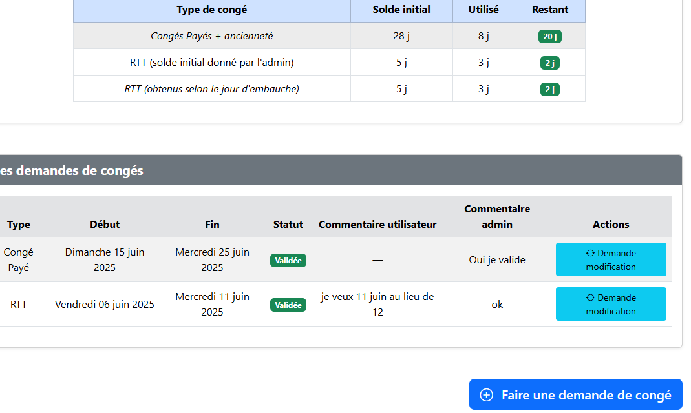
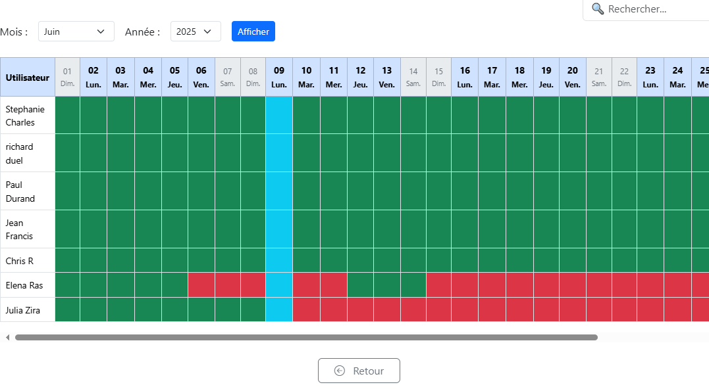
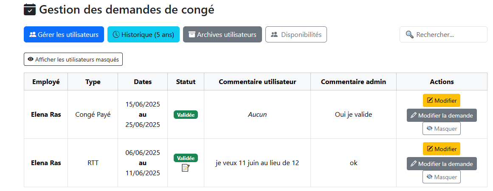
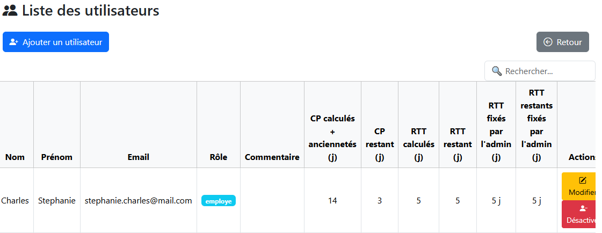
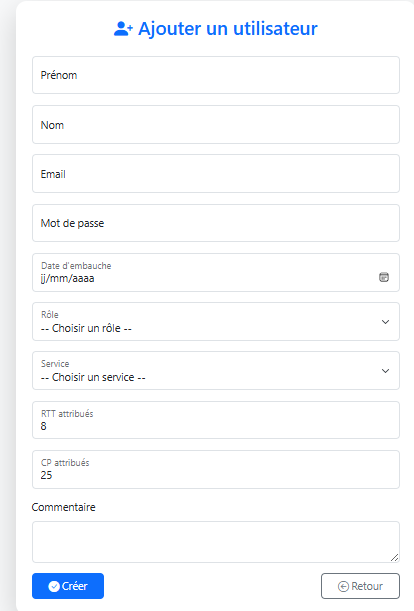
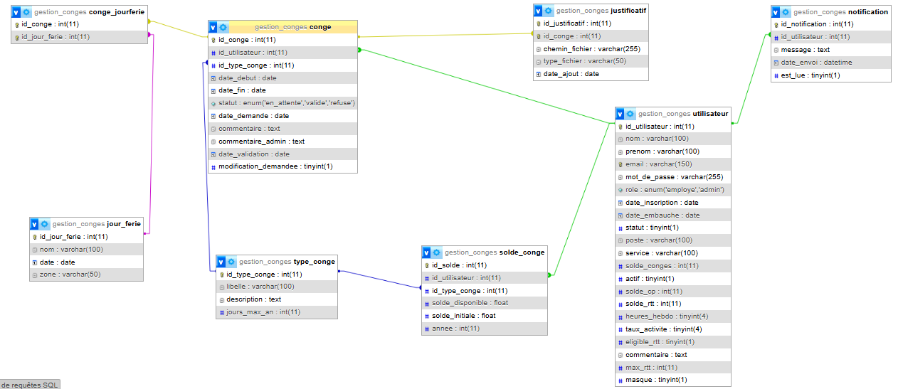
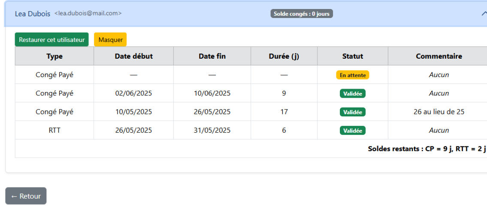
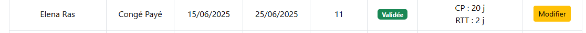
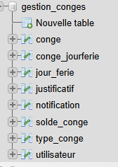

Lors de mon premier stage en entreprise chez ACCEN INFORMATIQUE, j'ai intégré une équipe de développement. Mon projet consistait à réaliser une solution de gestion des congés pour les collaborateurs. L'objectif était de moderniser et d'automatiser certains processus auparavant gérés manuellement, afin d'améliorer la précision du suivi des soldes de congés et la gestion administrative.
L'entreprise avait besoin d'un logiciel capable de :
Le projet a été développé avec les technologies suivantes :
Cette expérience m'a permis de comprendre concrètement le déroulement d'un projet informatique en entreprise, de l'analyse des besoins jusqu'à la livraison.
J'ai renforcé mes compétences techniques en développement front-end, en structuration de projet et en gestion agile. Ce projet m'a également sensibilisé à l'importance de l'expérience utilisateur dans la réussite d'une application.

Interface principale affichant les soldes de congés et les demandes en cours.

Planning mensuel et annuel avec disponibilité (vert), indisponibilité (rouge), jours fériés (bleu) et week-ends (gris).

Validation, refus et gestion des demandes par l'administrateur.


Permet de créer, modifier ou désactiver un utilisateur via formulaire.

Représentation des tables et relations dans XAMPP.


Affichage des utilisateurs archivés et historique des demandes de congés.

Vue d'ensemble des tables et relations de la base de données.